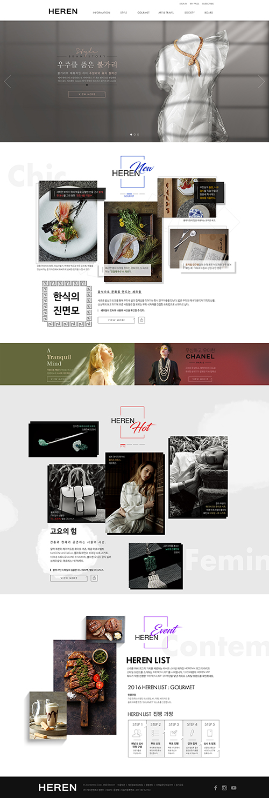

# 웹디자인, 개발 개론 박 영웅
# 무엇을 배우는가?
## 기획과 개발의 이해 모든 구성원이 프로세스를 제대로 이해해야 훌륭한 제품이 나온다! > 어?! 저는 잘 모르겠는데요...
## 개발을 왜 배워야 하는가? 개발자로 이직을 위해서가 아니고, 디자인 능력 향상을 위해서 배워라! > 포토샵의 'Align' 기능을 믿지 마세요!
## 프로토타입이 뭐죠? 언제까지 '말'로 설명할 것인가?! > 이거는 이렇게 움직여서 저렇게 끝나는건데.. 아.. 그게 아니구요..
## 웹 디자인(퍼블리싱) 상식 왜 섹션으로 나누고 해상도에 맞게 디자인하는가?<br> 이미지 소스 작업과 관리 방법 배우기! > 내가 디자인 고자라니?!
## 시간이 남으면? 회사별(부서별) 웹 디자이너들의 장단점 소개.
# 웹 프로세스의 이해
## 기획 + 디자인 + 개발 + 피드백 = 완성
# 기획 문서화 - 서비스 기획/분석 - 기획서(화면 설계서) 제작 - 웹 프로세스 조율(PM)
## 기획 - 분석 단계 - 사업성 분석 - 클라이언트 니즈(NEEDS) 분석 - 클라이언트 요구사항 분석 - 사용자(User) 분석
## 기획 - 기초 설계 - 벤치마킹 - 컨셉 설계 - 기초 시안 기획
## 기획 - 상세 설계 - 정보 설계(IA, Information Architecture) - 디자인 정의 - 화면 단위 기획 - 관리 방안 설계
### 정보 설계(IA) 예시
## 기획 - 콘텐츠 제작 - 이미지(사진) 제작 - 전문업체 번역 - 전문가 감수
# 디자인 시각화 - UI 디자인 - 이미지 소스 제작/관리
# 개발 구체화 - UI 개발 - 서버 통신 - 데이터 관리(DB) - 관리자 페이지 개발
## 개발 - 프론트엔드(Front-End) - HTML Markup(웹 퍼블리싱) - UI 개발 - HTML / CSS / JavaScript
## 개발 - 백엔드(Back-End) - 동적 페이지 개발(서버통신) - 데이터 관리(DB) - 관리자 페이지 개발 - PHP, JSP(JAVA), Ruby, Python, NodeJS, MySQL, MongoDB 등..
# 디자이너에게 웹 개발(퍼블리싱)이 필요한 이유
## 회사는 협업이 가능한 디자이너를 원한다 > 혹시 '웹 퍼블리싱'도 할 줄 아세요?
## 전후 프로세스의 이해가 없다면 무능한 디자이너이다 '네모 바퀴 자동차 이야기' > 사이트 하단에 들어갈 '춤추는 캐릭터'를 디자인 해주세요!
## `HTML`, `CSS`는 웹 디자이너의 기본 소양이다 구조, 표현, 동작 > 제 개발자 친구는 `CSS`가 어렵다고 해요.
## 개발자는 별도의 디자인(효과)을 교육받지 않는다 > 우리 회사 개발자는 항상 '1px'씩 어긋나게 만들어..
## 직접 만들 수 있는 심플하고 효율적인<br> 프로토타입 툴들이 많다 대부분의 인터렉션 프로토타입은 기본적인 코딩 경험이 필요하다. <img src="img/prototype_tool_sketch3.jpg" alt="Sketch 3" width="200"> <img src="img/prototype_tool_framer.jpg" alt="Framer" width="200"> > 슬라이드 애니메이션 만들어 놓았으니 코드만 복사해서 쓰세요.
## 효율적인 사고방식이 생긴다 디자인이란 미적이면서 기능적이어야 한다! > 그냥 예뻐서 넣었어요~ 이힛♡
## 연봉이 오른다! <img src="img/money.png" alt="돈" width="200"> > 포토샵 말고 하는거 없잖아? 올해 연봉 인상은 없어!
# 프로토타입?
## 클라이언트는 결과물을 본 후에야<br> 자신이 무엇을 원했었는지 안다 ``` 최종.psd 최종(1).psd 진짜최종.psd 최종(2).psd 마지막.psd 정말_마지막.psd 정정정정정말_마지막.psd 최종_170623.psd ```
## 디자이너가 사용하는 프로토타입 프로세스 - 와이어프레임 레이아웃(기획) - 비주얼 목업(정적 시안) - 인터렉션 프로토타입(동적 시안) - VCS(Version Control System) > 개발 전 디자이너가 실물과 최대한 비슷한 디자인 샘플을 만들어 체크하는 것을<br>'프로토타입'이라고 한다.
## Sketch 3 <img src="img/prototype_tool_sketch3.jpg" alt="Sketch 3" width="150"> <div class="video-container"> <div class="wrap"> <iframe width="100%" src="https://www.youtube.com/embed/YdIeiCyKwpI?rel=0&showinfo=0" frameborder="0" allowfullscreen></iframe> </div> </div>
## Framer <img src="img/prototype_tool_framer.jpg" alt="Framer" width="150"> <div class="video-container"> <div class="wrap"> <iframe width="100%" src="https://www.youtube.com/embed/cvxtlt4p2QY?rel=0&showinfo=0" frameborder="0" allowfullscreen></iframe> </div> </div>
## InVision <img src="img/prototype_tool_invision.jpg" alt="InVision" width="150"> <div class="video-container"> <div class="wrap"> <iframe width="100%" src="https://www.youtube.com/embed/1H7Ql9hmbuM?rel=0&showinfo=0" frameborder="0" allowfullscreen></iframe> </div> </div>
## Origami Studio <div class="video-container"> <div class="wrap"> <iframe width="100%" src="https://www.youtube.com/embed/5CiEPblNaqo?rel=0&showinfo=0" frameborder="0" allowfullscreen></iframe> </div> </div>
## Proto.io <div class="video-container"> <div class="wrap"> <iframe width="100%" src="https://player.vimeo.com/video/172378883?title=0&byline=0&portrait=0" frameborder="0" webkitallowfullscreen mozallowfullscreen allowfullscreen></iframe> </div> </div>
# 섹션(Section) 이해하기
## 섹션(Section) 이란? 웹 사이트를 구성하는 가장 큰 단위의 연결된 레이아웃들(Layouts) `header`, `footer`, `section`, `article`...

## 섹션으로 구성하는 이유 웹의 콘텐츠(Contents)를 구분하여 관리하기 위해서 섹션으로 구성. - 웹의 내용 구분 - 각 레이아웃의 기준 - 관리가 편리
<img src="img/remove_section.jpg" alt="섹션 빼기" width="900">
## 각 섹션들로 구분된 HTML 코드 ```html <!DOCTYPE html> <html> <head></head> <body> <!--HEADER--> <header></header> <!--SECTION 1--> <div></div> <!--SECTION 2--> <section></section> <!--SECTION 3--> <article></article> <!--FOOTER--> <footer></footer> </body> </html> ```
# 해상도 이해하기
## 모니터 해상도 종류 <img src="img/video_standards.png" alt="모니터 해상도 종류" width="900">
## HD 해상도 | 종류 | 해상도 (px) | 웹 비율 | |--|--|--| | HD | 1366 x 768 | 30.05 | | **FHD** (Full) | **1920 x 1080** | 13.69 | | QHD (Quad) | 2560 x 1440 | 1.10 | | UHD (Ultra) | 3840 x 2160 | |
### 1920 x 980 (FHD)
### 1600 x 900 (Laptop)
### 1920 x 980 (FHD)
### 1600 x 900 (Laptop)
### 1366 x 768 (HD)
# 이미지 소스의 작업 포토샵 - 비트맵(Bitmap) 이미지 제작
## 기본 설정 1. `Menu` > `View` > `Snap` 활성화 (<kbd>Shift</kbd> <kbd>Ctrl</kbd> <kbd>;</kbd>) 1. `Menu` > `View` > `Rulers` 활성화 (<kbd>Ctrl</kbd> <kbd>R</kbd>)
## 가이드 추가 - 선택툴(Marquee)로 추가 1. 선택툴(Marguee)로 영역 지정(<kbd>M</kbd>) 1. 영역에 맞게 가이드 라인(Guides) 추가 > Adobe Photoshop CC 이상 버전에서는 선택툴로 영역을 설정할 필요가 없습니다.
## 가이드 추가 - 슬라이스(Slice)로 추가 1. 슬라이스(Slice)로 영역 지정(<kbd>C</kbd>) 1. 영역에 맞게 가이드 라인(Guides) 추가
## 소스 만들기 - 크롭(Crop) 활용 1. 선택툴(Marguee)로 영역 지정(<kbd>M</kbd>) 1. `Menu` > `Image` > `Crop`(<kbd>Alt</kbd> <kbd>I</kbd> > <kbd>P</kbd>) 1. Save for Web..(<kbd>Shift</kbd> <kbd>Ctrl</kbd> <kbd>Alt</kbd> <kbd>S</kbd>) 1. Save.. 1. 저장
## 소스 만들기 - 슬라이스(Slice) 활용 1. 슬라이스(Slice)로 영역 지정(<kbd>C</kbd>) 1. Save for Web..(<kbd>Shift</kbd> <kbd>Ctrl</kbd> <kbd>Alt</kbd> <kbd>S</kbd>) 1. 저장할 영역 선택(Selected Slices 의 경우) 1. Save.. 1. 하단 Slices: 메뉴에서 유형 선택(All Slices / All User Slices / Selected Slices)
## 슬라이스(Slice Tool) | 기능 | 설명 | |--|--| | Normal | 사용자가 자유롭게 슬라이스 | | Fixed Aspect Ratio | 입력된 값의 비율을 유지하여 슬라이스 | | Fixed Size | 입력된 값 만큼 슬라이스 | | Slice From Guides | 지정된 가이드 라인에 맞게 슬라이스 |
## 슬라이스 선택(Slice Select Tool) | 기능 | 설명 | |--|--| | Delete Slice | 슬라이스 삭제(<kbd>Delete</kbd>) | | Edit Slice Options... | 슬라이스 옵션(이름,크기,위치 등) | | Promote to User Slice | 슬라이스 활성화 | | Combine Slices | 슬라이스 병합 | | Divide Slice... | 슬라이스 분할 | | Bring to Front | 슬라이스 가장 앞으로 | | Bring Forward | 슬라이스 앞으로 | | Send Backward | 슬라이스 뒤로 | | Send to Back | 슬라이스 가장 뒤로 |
# 이미지 소스의 관리
## 24비트(bits) 컬러 이미지(`JPG` / `PNG-24`)로<br> 저장하세요 | | 8 bits | 24 bits | |--|---|---| | 색상 수 | 256 | 16,777,216 | > `GIF`는 8비트 컬러 이미지이지만 '반복 이미지(움짤)'를 위해서 사용됩니다.
## `JPG`는 반복 저장하지 마세요 '손실 압축' 방식을 사용하기 때문에 반복적으로(쓸데없이) 저장하면,<br> 이미지 품질이 심각하게 손상될 수 있습니다.
## `PNG-24`로 저장하세요 포토샵은 `PNG-8`에서 투명도 지원에 문제가 있습니다.
## Save file names in English. Languages other than English can cause problems with 'Encoding'. ``` 로고.jpg (X) 애니메이션2.gif (X) logo.jpg (O) animation2.gif (O) ```
## 영어 소문자만 사용 보통의 개발 언어는 대문자와 소문자를 구분합니다. ``` Logo.png (X) SNS.png (X) logo.png (O) sns1.png (O) ```
## 숫자로 시작 금지 파일명이 숫자로 시작하면 '문자'로 해석이 되지 않습니다. ``` 1sns_btn.png (X) sns_btn1.png (O) ```
## 띄어쓰기 금지 띄어쓰기가 들어가면 여러 파일로 인식될 수 있습니다. ``` sns btn.jpg (X) close btn.png (X) sns_btn.jpg (O) close-btn.png (O) ```
## 공통 이름으로 만드세요 다른 단어로 시작하게 되면 이미지를 찾기 어려워집니다.<br> 특정 부분에서 사용되는 파일들은 공통된 이름으로 관리하세요. ``` facebook.png (X) twitter.png (X) blog.png (X) sns_facebook.png (O) sns_twitter.png (O) sns_blog.png (O) ```
# 부록 - 회사별 디자이너의 차이
## 웹에이전시 디자이너 웹 디자인(UI), 이벤트 페이지 디자인 | GOOD | BAD | |---|---| | 다양한 디자인 경험 | 일상이 야근 | | 효율적이고 세분화된 업무 프로세스 경험 | 조물주 위에 클라이언트 | 양질의 포트폴리오 | 포토샵 기계 | | | 낮은 초봉 |
## 마케팅팀 디자이너 기획, 마케팅, 편집, 영업, 디자인(?) 등... | GOOD | BAD | |---|---| | 기획 단계부터 많은 참여 가능 | 실질적 디자인 업무가 거의 없음 | | 프로세스의 큰 흐름을 볼 수 있음 | 디자인 외 업무가 상당히 많음 | | 갑질 가능 | '내가 디자이너 맞나?' | | 안정적인 연봉 | |
## 자체 서비스를 보유하고 있는<br> IT 회사 디자이너 웹 디자인(UI/UX), 유지/보수 | GOOD | BAD | |---|---| | 작은 규모로 기획 단계 참여/제작 | 서비스가 실패하면 직장을 잃을 수 있음 | | 균형잡힌 업무 | 지옥의 업데이트 | | 수평적 문화가 많음 | ' 포트폴리오는?' |
# 무엇이든 물어보세요?!
# Thank you for listening